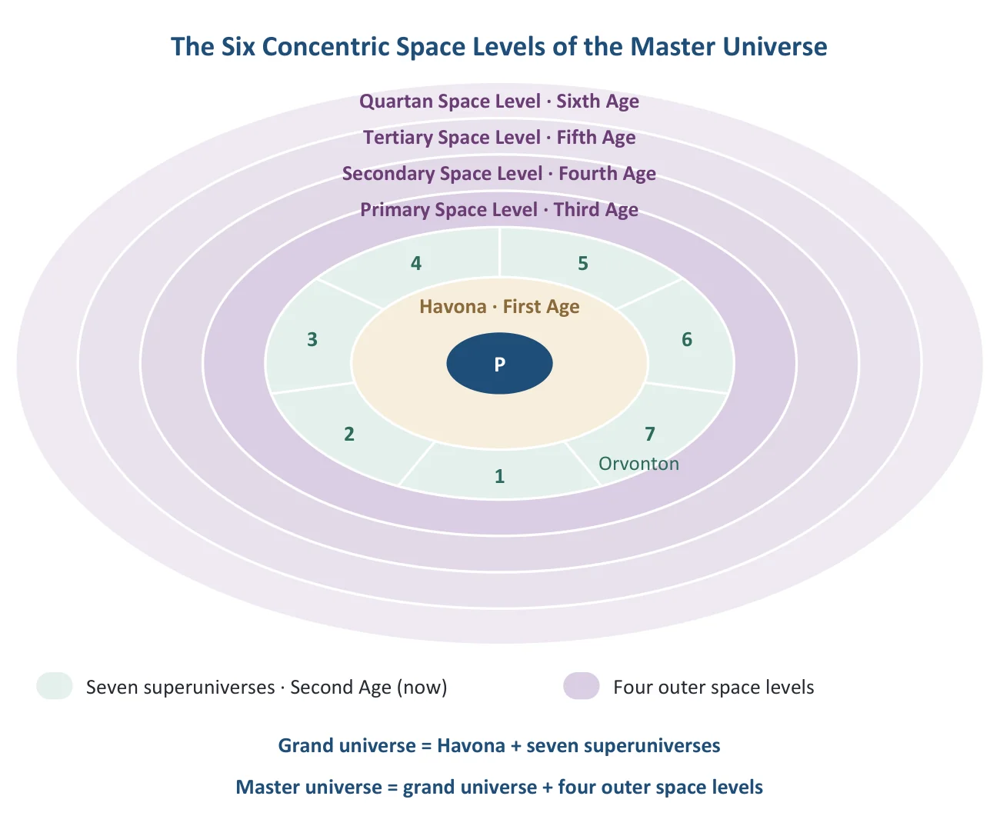

Original : Guide de A Study of the Master Universe (p. 23) · Introduction (p. 25–29)
Ayant achevé le prologue, Sadler dresse la scène avant d’entrer dans le corps principal. Il distingue les différentes façons dont le Livre d’Urantia emploie le mot « univers » et propose de considérer le maitre univers à travers un cadre de six niveaux d’espace concentriques et de six âges de l’univers correspondants. Il pose ensuite sept groupes de questions, qui portent sur la taille des niveaux d’espace, la durée des âges de l’univers, la croissance de la Déité expérientielle, l’avenir des finalitaires mortels, ce qui pourrait se trouver au-delà du maitre univers, et d’autres sujets encore, et il invite le lecteur à commencer la recherche avec humilité et courage.
Au début du corps principal, Sadler condense toute l’étude en une seule phrase. C’est l’histoire de l’extension créative et évolutionnaire de la divinité du Paradis-Havona dans le temps et l’espace, extension consolidée dans le Suprême au niveau fini et dans l’Ultime au niveau absonite. Elle commence aussi, sans l’achever, l’histoire qui se poursuit au-delà de l’Ultime.
Le corps principal est donc disposé en trois parties : « L’Histoire finie », « L’Histoire absonite » et « Le Commencement de l’Histoire finale ». L’étude proprement dite commence lorsque l’âge de Havona de l’éternité passée fait place à un âge qui a une origine dans le temps, le deuxième âge, dans lequel nous vivons. Et elle se terminera peu après que l’âge final du maitre univers aura achevé son cours dans le temps et fera place à l’âge de l’éternité future.
Sadler ouvre son introduction par des questions. Qu’est-ce, au juste, que le maitre univers ? Lorsque le Livre d’Urantia emploie ce terme, quelle part de sa signification saisissons-nous ? Savons-nous comment le dessein de Dieu se déploie dans le maitre univers, ou quel peut être le dessein du maitre univers lui-même ?
Il faut d’abord mettre de l’ordre dans le vocabulaire. Le Livre d’Urantia emploie le mot « univers » de plusieurs manières : univers local, superunivers, univers central, grand univers et maitre univers. Havona est l’univers central, la création la plus proche autour du Paradis. Le Paradis lui-même, note Sadler, n’appartient à aucun univers ; il est le centre absolu de toutes les choses matérielles et il est lui-même sans mouvement.
Le Paradis n’est pas dans l’espace, c’est l’espace qui existe relativement au Paradis, et la chronicité du mouvement est déterminée par sa relation avec le Paradis.105:3.4
Havona est entouré de sept superunivers, dont le septième est notre propre superunivers, Orvonton. Chaque superunivers est conçu pour contenir exactement cent-mille univers locaux, et notre univers local s’appelle Nébadon.
Lorsqu’il se réfère à l’univers central et aux sept superunivers ensemble, le Livre d’Urantia emploie le nom de « grand univers ». Le grand univers est la création actuellement organisée et habitée, par contraste avec les régions inorganisées et inhabitées de l’espace qui se trouvent au-delà, les quatre niveaux de l’espace extérieur. Le grand univers et ces quatre niveaux de l’espace extérieur forment ensemble le « maitre univers ».
Elles font toutes partie du maitre univers, qui embrasse aussi les univers de l’espace extérieur inhabités mais en voie de mobilisation.0:0.6
Lorsque Sadler veut désigner les quatre niveaux de l’espace extérieur seuls, il parle des « univers extérieurs ». L’expression du Livre d’Urantia « univers des univers » n’est pas strictement définie ; elle désigne de manière assez libre le grand univers, en y incluant parfois les niveaux de l’espace extérieur et parfois non.

Sadler considère que la meilleure description d’ensemble du maitre univers est celle du fascicule 12, section 1, « Niveaux d’espace du maitre univers ». La création maitresse y est représentée comme six niveaux d’espace elliptiques et concentriques.
Partant du Paradis vers l’extérieur à travers l’extension horizontale de l’espace pénétré, le maitre univers existe en six ellipses concentriques, les niveaux d’espace entourant l’Ile centrale :12:1.3
Chaque niveau d’espace a deux noms employés presque indifféremment ; le premier niveau de l’espace extérieur, par exemple, est aussi appelé niveau d’espace primaire. L’Introduction du Livre d’Urantia mentionne ces noms à propos de l’avenir de Dieu le Septuple.
L’organisation de ces futurs univers sur les niveaux d’espace primaire, secondaire, tertiaire et quaternaire d’évolution progressive marquera sans aucun doute l’inauguration de l’approche transcendante et absonite de la Déité.0:8.12
Un autre concept dont Sadler fait bon usage est celui de six âges successifs de l’univers. Il lit le Livre d’Urantia comme reliant chaque âge de l’univers à la période pendant laquelle un nouveau niveau d’espace est ouvert et développé. Niveaux d’espace et âges de l’univers sont ainsi associés un à un.
| Ordre | Niveau d’espace | Autre nom | Âge de l’univers correspondant |
|---|---|---|---|
| 1 | Niveau d’espace de Havona | Univers central | Premier Âge de l’univers |
| 2 | Niveau d’espace des superunivers | Sept superunivers | Deuxième Âge de l’univers (actuel) |
| 3 | Premier niveau de l’espace extérieur | Niveau d’espace primaire | Troisième Âge de l’univers |
| 4 | Deuxième niveau de l’espace extérieur | Niveau d’espace secondaire | Quatrième Âge de l’univers |
| 5 | Troisième niveau de l’espace extérieur | Niveau d’espace tertiaire | Cinquième Âge de l’univers |
| 6 | Quatrième niveau de l’espace extérieur | Niveau d’espace quaternaire | Sixième Âge de l’univers |
Suivant ce cadre, Sadler se propose de retracer la croissance du maitre univers en prêtant une grande attention à la séquence des évènements. Son but est de voir comment les âges de l’univers vont de pair avec l’extension vers l’extérieur de la créativité et des personnalités du Paradis à travers les niveaux d’espace concentriques. Le Livre d’Urantia déclare que ces niveaux d’espace sont assignés à des créations de caractère différent.
L’univers central est la création de l’éternité ; les sept superunivers sont la création du temps ; les quatre niveaux d’espace extérieur sont indubitablement destinés à élaborer l’extériorisation de l’ultimité de la création.12:1.16
Le Livre d’Urantia parle souvent du « présent âge de l’univers », des « âges futurs de l’univers » et de « l’âge des univers extérieurs », mais nulle part il ne donne une liste numérotée de six âges associés un à un aux niveaux d’espace. L’association présentée dans le tableau ci-dessus est un cadre que Sadler a construit en rassemblant des affirmations éparses. Des noms comme « Premier Âge de l’univers » et « Troisième Âge de l’univers » doivent donc être lus, pour une large part, comme la terminologie de Sadler. Néanmoins, puisque le texte distingue Havona comme la création de l’éternité, les superunivers comme la création du temps et les niveaux de l’espace extérieur comme les futures créations de l’ultimité, son idée de base selon laquelle les niveaux d’espace s’ouvrent dans l’ordre, de l’intérieur vers l’extérieur, s’accorde bien avec le texte.
Sadler reformule l’intention de son étude : examiner attentivement le maitre univers et voir ce que l’on peut apprendre sur le dessein de Dieu. Si nous rassemblons tout ce que le Livre d’Urantia dit de la création maitresse, de ses niveaux d’espace et de ses âges de l’univers, puis comblons les lacunes entre ces données (interpolation) et les prolongeons au-delà de leur domaine (extrapolation), nous pourrons comprendre un peu mieux le plan de Dieu pour la création maitresse et pour les créateurs et les créatures de ses vastes domaines.
Il expose en sept groupes les questions que l’étude examinera. Elles servent de table des matières à l’ensemble du livre et reviennent dans le chapitre de conclusion.
Sadler dit qu’il abordera ces questions en examinant tour à tour les âges de l’univers. Avant l’âge présent, il n’y en a eu qu’un, l’âge de Havona, que le prologue a déjà traité. Il va maintenant considérer le deuxième âge, où se développent les superunivers, puis passer aux âges futurs des quatre niveaux de l’espace extérieur.
Là où les données présentent des lacunes, dit-il, il les comblera par le raisonnement. Il admet aussi qu’une telle spéculation ne peut échapper aux limites qu’impose l’ignorance humaine. Il espère néanmoins parvenir au moins à une meilleure « unification de l’ignorance ». Le simple fait de mettre en ordre ce que nous ignorons est déjà un pas en avant. L’introduction se termine par une invitation à partir dans un esprit d’aventure, avec humilité intellectuelle, mais sans perdre courage.